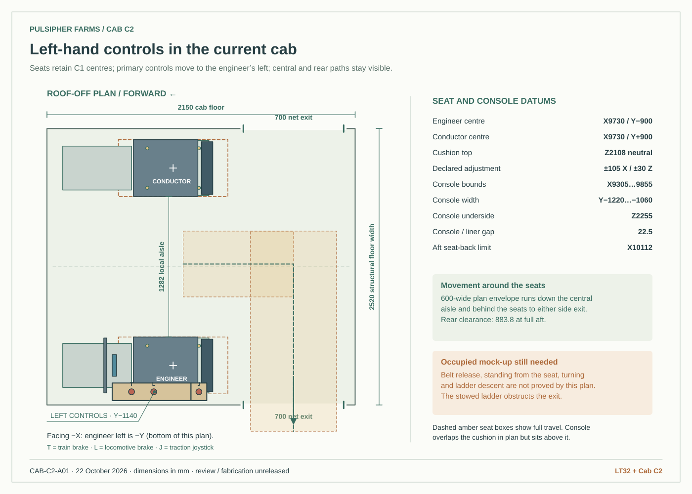
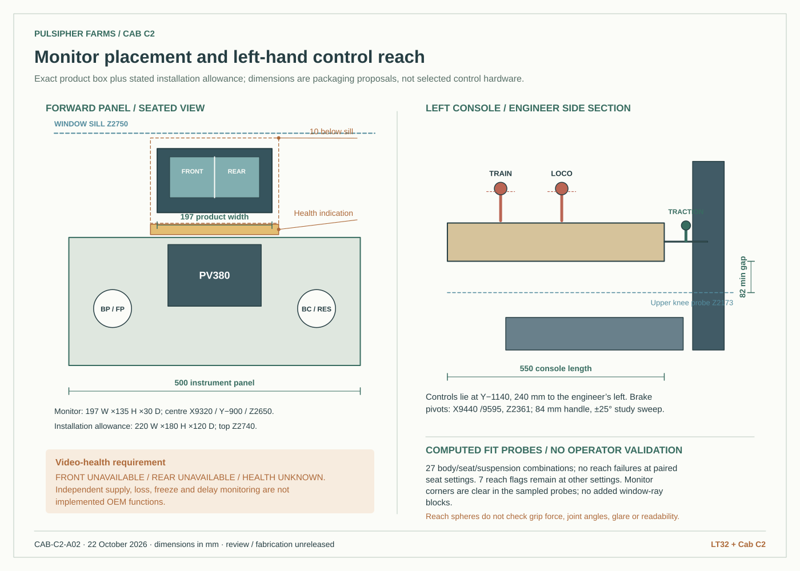
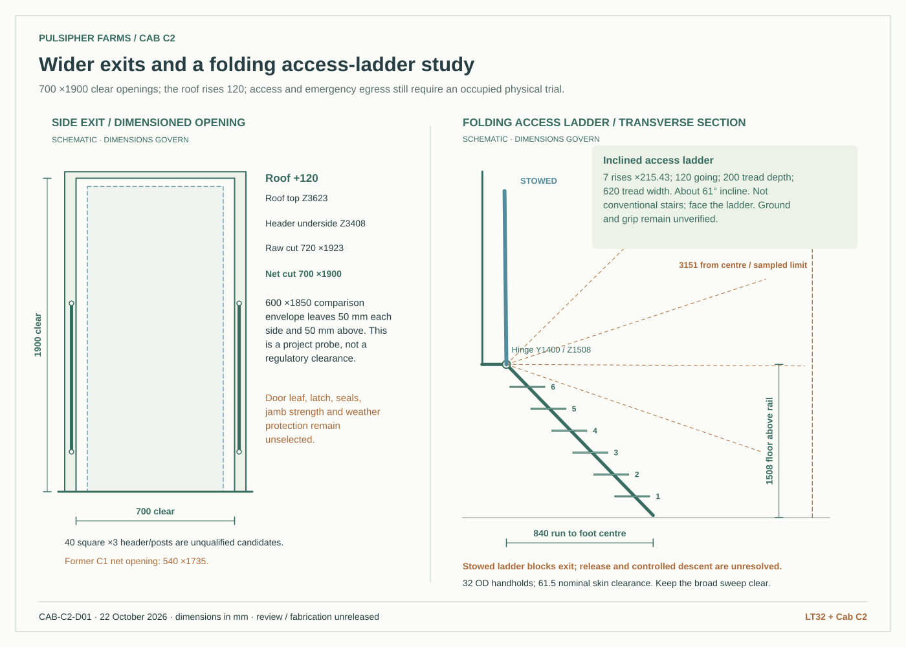
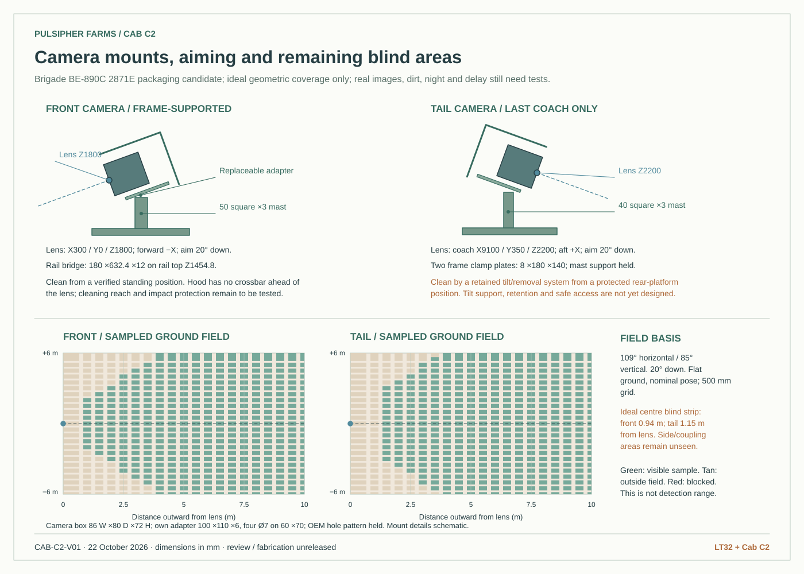
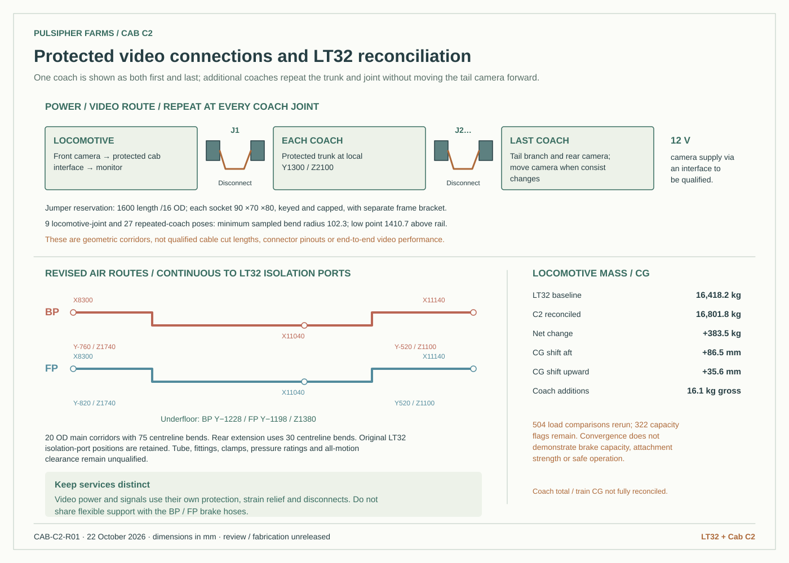

Indexed lock geometry, manual-drive effort and exit time, plus unexecuted cab and camera test records. C2 remains the integrated LT32 baseline.
Open the mechanism and physical-trial review →CAB C2 / INTEGRATED WITH LT32
Left-hand controls. Views at both ends.
The engineer’s main controls now sit on the left. The seat stays aligned with the front window, a split-view monitor sits below the sill, and cameras look ahead of the locomotive and behind the last coach. Larger side openings, handholds and a folding access ladder make the next exit decisions visible.
700 × 1,900 mmNet side opening, with the roof raised 120 mm
Front + last coachProtected wired cameras, declared 20° downward aim
504 load casesRecomputed using the revised cab and camera mass ledger
Current review status. Camera performance and operator usability are untested. The folding ladder blocks its exit when stowed; its manual release, controlled lowering and positive lock need completion. Actual brake devices, restraint and mounting approval, video-health electronics and the accepted running-gear interfaces remain open.
What changed in this revision
| Area | Modeled in C2 | Still to verify |
|---|---|---|
| Engineer controls | Train and locomotive brakes, traction, direction, park, horn, key, emergency stop and camera selector sit at negative Y: the engineer’s left while facing forward. The elevated enclosure clears the seat and knee probes. | Final devices, control forces, detents, full arm movement and occupied mock-up. |
| Monitor | Brigade 7-inch packaging candidate, forward of the engineer and below the front sill. Independent video-health annunciator space and fault-display prototype. | Actual sunlight/night readability, image size, mirror orientation, latency and fault detection. The prototype does not detect hardware faults. |
| Cameras | Front camera on a frame-supported mast; rear camera on the last coach’s end-frame bracket. Guards stay behind the lens plane; aim, cleaning and removal spaces shown. | Exact OEM mount pattern, aim lock, weather/IR effects, cleaning reach, vibration and a real moving-train test. |
| Wiring | Protected separate video/power trunk, capped keyed sockets and flexible jumpers at the locomotive and a repeatable coach joint. | Whole-consist cable length, supply loss, shielding, connector count and signal continuity. Camera power is 12 V; OEM interfaces must be preserved. |
| Exits | 700 × 1,900 clear openings, raised roof, jamb supports, rear circulation and handholds. Six open treads with seven equal 215.43 mm rises. | Inclined-ladder release/lock, broad lowering sweep, ground conditions, grasp and safe descent. Door leaves, seals and latch details are not issued. |
| LT32 reconciliation | Net locomotive mass change +383.5 kg. Updated case placements are used by the combined viewer. Cab BP/FP routes now meet the retained rear isolation ports. | Remaining supplier, articulation, brake-circuit, strength and capacity approvals. |
Dimensioned review drawings
Dimensions are in millimetres. These drawings document the candidate arrangement; they are not a fabrication release.




